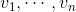
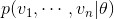
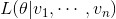
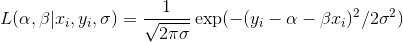

14.3 最大似然估计
我们为什么会选择最小二乘法呢？其中一个原因就是最大似然估计 （maximum likelihood estimation）。假设我们的数据样本  服从由未知参数 θ 确定的概率分布：

虽然我们不知道 θ ，但是可以回过头来通过给定样本与 θ 的相似度来考量这个参数：

按照这种方法，θ 最可能的值就是最大化这个似然函数的值，即能够以最高概率产生观测数据的值。在具有概率分布函数而非概率密度函数的连续分布的情况下，我们也可以做同样的事情。
再回到回归这个话题。对于简单回归模型来说，通常假设回归误差是呈正态分布的，其均值为 0，并且已知标准偏差 σ 。如果是这样的话，那么就可以通过下面的似然函数来描述 α 和 β 产生 (x_i, y_i) 的可能性大小了：

由于待估计的参数产生整个数据集的可能性为产生各个数据的可能性之积，因此令误差的平方和最小的 alpha 和 beta 最有可能是我们所求的。换句话说，在这种情况下（包括这些假设），最小化误差的平方和等价于最大化产生观测数据的可能性。